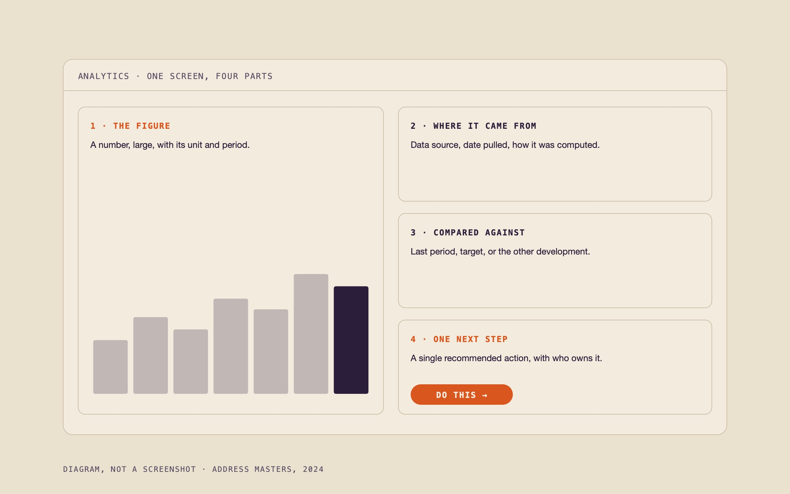
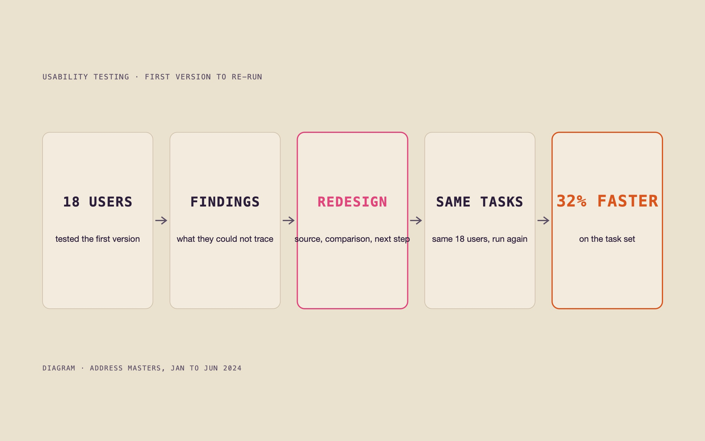
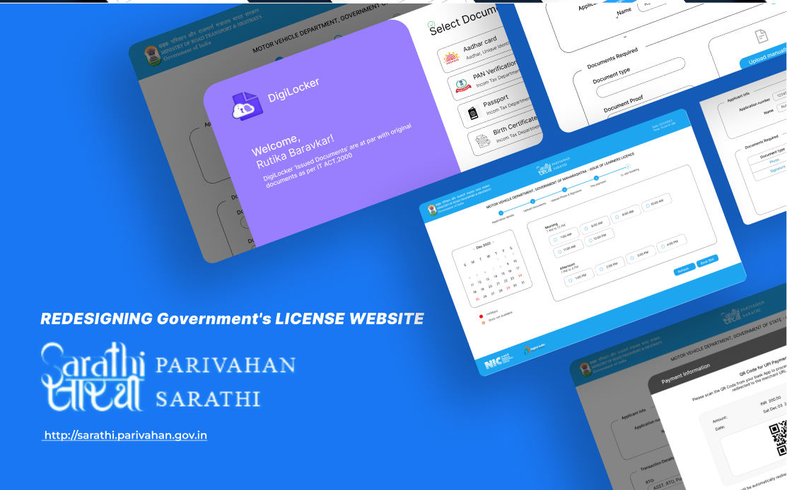

The problem
Address Masters was an early stage real estate startup marketing two residential developments. Its product was an analytics dashboard built around AI generated insights for the sales and marketing team. When I joined as the only designer, the analytics existed but nobody acted on them: the screens showed figures without showing where they came from or what to do next.
What I did
- Mapped the product into 12 end to end workflows and designed 40+ high fidelity screens in Figma, working directly with the engineers.
- Ran usability tests with 18 users on the first version.
- Redesigned the analytics screens around provenance and next action: where each figure came from, what it was compared against, and one recommended step. Shortened the most frequent tasks.
- Built a reusable component library with the engineers so new screens shipped consistent by default.

What happened
| 32% | improvement in task efficiency on the re run of the same task set with the same users |
| 25% | less design iteration time after the component library |
| 40+ | screens shipped to production with the engineering team |
| 12+ | end to end workflows shipped |
| 18 | users in usability testing |
The marketing side of the same six months has its own page.
Address Masters campaigns

Next projectRedesigning India's learner's license portal